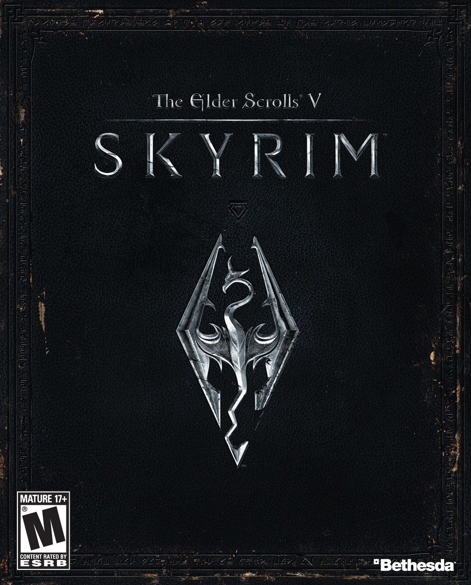
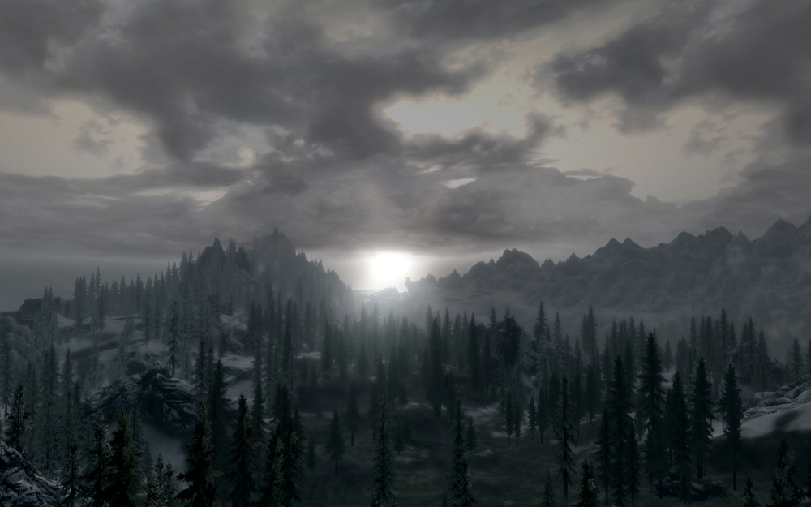
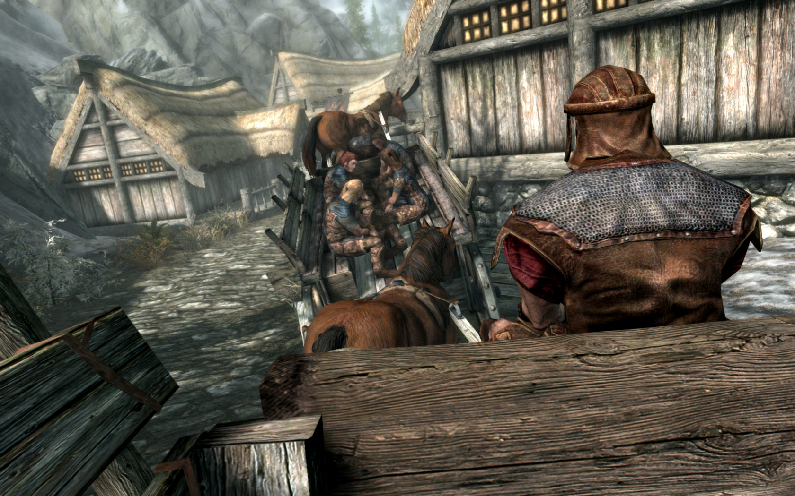

Chapter V: Skyrim
Short summary
I used to be an adventurer like you, then I took an arrow to the knee.
It is the fifth installment in The Elder Scrolls action/adventure RPG fantasy video game series, and follows The Elder Scrolls IV: Oblivion by approximately 200 years, during the Fourth Era. The game was announced on November 11, 2010 at the Spike Video Game Awards in Los Angeles, with a release date of November 11, 2011. It features Radiant A.I., along with Radiant Storytelling or Radiant Story, to help enhance quests, and a new and improved graphics engine.
 On June 12th, 2016, Bethesda announced that a remastered version of the game would be released for the PC, Xbox One, and PS4 on October 28th, 2016. The remastered version will include improved graphics, such as snow shaders and volumetric God rays, and will also include the ability to download mods on the main menu. People who own the game on Steam and have either the Legendary Edition or all three add-ons will be able to download the remastered version for free. Versions for the PlayStation VR and Nintendo Switch were released on November 17th, 2017. and a stand-alone virtual reality (VR) version for Windows was released in April 2018.

The plot
Two hundred years have passed since the events of The Elder Scrolls IV: Oblivion, and it is now 4E 201. The High King of Skyrim has been killed, and the threat of Civil War looms over the land of Skyrim; One side wishes to secede from the weakened Third Empire, while the other wishes to remain a part of it. To make matters worse, this schism is the final event in a prophecy foretold by the Elder Scrolls that will lead to the return of the dragons under Alduin, the Nordic god of destruction.
The player starts the game on a cart heading for the chopping block after being caught with the Stormcloaks in an ambush by the Imperial Legion. As the player lays their head on the chopping block, the dragon Alduin attacks. In the midst of the chaos, Hadvar, several Stormcloaks, along with their leader and fellow prisoner, Ulfric Stormcloak, assist in the player's escape. The player may choose between the assistance of Ralof, the Stormcloak who arrived with Ulfric, or Hadvar, the Imperial soldier tasked with reading off the names of the prisoners being sent to their execution. After assisting and gaining the favor of Jarl Balgruuf the Greater, The player later learns that they are Dovahkiin, or Dragonborn, a person charged with the duty of defeating Alduin and the dragons. Eventually, the player meets Delphine, and Esbern, two of the last remaining Blades, and becomes the pupil of the esteemed Greybeards of High Hrothgar.
"You should have acted. They're already here. The Elder scrolls told of their return. Their defeat was merely a delay. From the time after Oblivion opened. When the sons of Skyrim would spill their own blood. But no one wanted to believe. Believe they even existed. And when the truth finally dawns, it dawns in fire. But there is one they fear. In their tongue, he is Dovahkiin - Dragonborn!"
Races
Players can craft their character using one of the ten races of Tamriel—Imperials, Nords, Redguards, Bretons, Dunmer, Altmer, Bosmer, Orsimer, Khajiit, and Argonians. Each race is characterized by a specific power and passive bonus, as well as starting with a few skills at slightly higher levels. For example, High Elves begin the game with 50 extra magicka, the ability to drastically increase their magicka regeneration rate for 60 seconds once per day, and five extra points in several of the magic skills. Playable races include:
- Altmer (High Elves – Summerset Isles)
- Argonian (Reptilians, or Lizards – Black Marsh)
- Breton (Humans – High Rock)
- Bosmer (Wood Elves – Valenwood)
- Dunmer (Dark Elves – Morrowind)
- Imperial (Humans – Cyrodiil)
- Khajiit (Felines – Elsweyr)
- Nord (Humans – Skyrim)
- Redguard (Humans – Hammerfell)
- Orsimer (Orcs – Orsinium)
There are also two unplayable races which are mentioned throughout the game:
- Falmer – The Snow Elves were a race that inhabited Skyrim long before the Nords. The Elves were massacred by the Nords and fled underground. Here they found refuge with the Dwemer, ostensibly on the condition that they eat poisonous fungi causing blindness. The effects of the fungi and their life underground have morphed them into the Falmer seen often in caverns, Dwemer ruins and Falmer hives.
- Dwarves (Dwemer) – A long-lost race that once lived throughout Vvardenfell, Skyrim and Hammerfell. They preferred the use of technology over magic, as is evident in the Dwemer ruins, Animunculi, and technological artifacts encountered throughout Skyrim, as the machines they created are still working to this day doing their duty to protect what is left of the Dwemer (translated as "Deep Elves").
Skills
There are eighteen skills in all, six for each style of play (Magic, Combat, and Stealth). They are as follows:
- Alteration
- Conjuration
- Destruction
- Illusion
- Restoration
- Enchanting
- Archery
- Block
- Heavy armor
- One-handed
- Two-handed
- Smithing
- Alchemy
- Light armor
- Lockpicking
- Pickpocket
- Sneak
- Speech
The Mage:
The Warrior:
The Thief:
Acrobatics and Athletics have been entirely removed from the game. Fall damage scales with distances and players may run more quickly by using the newly implemented sprinting function both in and out of combat.